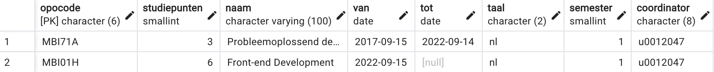

The best teachers do not simply spout information at their students and hope for the best. The best teachers are those who set expectations responsibly and ensure that students adopt a resilient, “can-do” frame of mind.
— Walter Shields, SQL QuickStart Guide: The Simplified Beginner's Guide to Managing, Analyzing, and Manipulating Data With SQL
Intro SQL
In dit hoofdstuk duik je voor het eerst in een databank. Je leert al doende de basis structuur van een relationele databank en hoe je structuur en inhoud kan manipuleren. Alles wat we zien in dit hoofdstuk wordt verder uitgediept en uitgelegd in de komende hoofdstukken. Het is expliciet de bedoeling dat je de instructies in dit hoofdstuk ook uitvoert op de databankserver.
Heb je vragen, dan zijn wij er om je te helpen.
Onze eerste tabel: lijst van OPO’s
Onze opleiding Toegepaste informatica bestaat uit een lange lijst van OPO’s (OPleidingsOnderdelen). Sommige zijn verplicht, andere zijn keuzeOPO’s. Jouw ISP (Individueel StudieProgramma) maakt een selectie uit deze lijst. De opleiding verandert echter geregeld (zoals nu vanaf academiejaar 22–23 en volgende). De lijst van alle OPO’s moet ook die OPO’s vermelden die vroeger wel in het opleidingsprogramma zaten, maar nu niet meer. Zo beschikken we over een overzicht van alle huidige OPO’s en een archief van alle vorige in één tabel.
In dit voorbeeld vereenvoudigen we de werkelijkheid een heel stuk zodat we alle stappen aan bod kunnen laten komen zonder dat het te complex wordt.
Wat wil je bijhouden?
Vooraleer je begint te coderen moet je eerst nadenken. Wat wil ik juist bijhouden? Waarvoor moet de data dienen?
Bekijk even het onderwijsaanbod van Toegepaste informatica. Je vindt hier alle OPO’s van onze bacheloropleiding van dit jaar. Bovendien is er een archief waarop je alle OPO’s van voorgaande jaren ook terugvindt. Dit overzicht is heel erg verschillend van dat van 2021–22, want we zijn in academiejaar 2022–23 met een volledig vernieuwde opleiding gestart.
Bekijk eens één van je OPO’s, bvb. ‘Front-end Development’:
Welke informatie vind je hier terug? Vanzelfsprekend gaan we ons in dit inleidend voorbeeld erg beperken tot de basis.
We willen vooral dat die info die nuttig is om je ISP samen te stellen hier voorzien wordt. We kiezen voor volgende gegevens:
-
Elke OPO wordt uniek geïdentificeerd door een OPOcode. Bij ‘Front-end Development’ is dat ‘MBI01H’. Als je naar andere OPO’s kijkt, merk je dat deze code telkens uit 6 karakters bestaat.
-
Vanzelfsprekend is het nogal onpraktisch om telkens met codes te spreken. Daarom voorzien we voor elk OPO ook een naam zoals ‘Front-end Development’.
-
Belangrijk voor het opstellen van ISP’s is het aantal studiepunten (SP) per OPO. De meeste OPO’s hebben 6 SP.
-
Vanaf dit jaar beginnen we met een opleiding in het Engels. Hetzelfde OPO wordt nu zowel in het Nederlands als in het Engels gegeven. Die twee versies krijgen elk een andere OPOcode, maar toch is het handig om in onze lijst de taal op te nemen.
-
In welk semester wordt het OPO gegeven? Sommige OPO’s (zoals stage) kunnen in verschillende semesters opgenomen worden. Voor je ISP is het ook handig als je een overzicht per semester kan krijgen. Laten we deze waarde gebruiken als combinatie van fase (1, 2 of 3) en semester (1 of 2). Zo betekent de waarde 4 dat dit een OPO is uit fase 2, tweede semester.
-
OPO’s komen en gaan. Twee jaar geleden zag het programma van 1TI er totaal anders uit. Zo was er bvb. een OPO ‘Probleemoplossend denken’ dat gedurende een vijftal jaar gegeven is en nu dus verdwenen is uit het programma. We zullen een manier moeten verzinnen om in onze lijst ook deze informatie te verzamelen zodat we per jaar kunnen reconstrueren welke OPO’s er in dat jaar allemaal gegeven werden.
-
Elk OPO heeft een coördinator en lectoren die het geven. OPO’s worden meestal door meerdere lectoren gegeven (in het eerste jaar vaak 4 per OPO). Dat zullen we later toevoegen in ons model want dat is momenteel in deze inleiding wat te moeilijk. Wat we wel kunnen toevoegen is de coördinator, want dat is juist 1 lector. Net zoals studenten hebben lectoren een unieke code van 1 letter (‘u’) gevolgd door 7 cijfers. In een ander stuk van het grotere schema dat we later zullen maken kan je dan per lector alle informatie vinden (naam, mailadres enz.)
De gegevens uit de lijst hierboven worden de kolommen (verticaal) van de tabel. Per OPO komt er dan een rij (horizontaal) in de tabel.
Enkele eenvoudige datatypes
Een databank zoals PostgreSQL gebruikt verschillende datatypes. Vooraleer we met SQL aan de slag kunnen gaan, moeten we eerst iets vertellen over datatypes. Elk datatype heeft zijn specifiek doel en eigenschappen. Het is belangrijk dat je op voorhand goed nadenkt over het meest geschikte datatype. In deze inleiding beperken we ons tot een kleine selectie van datatypes.
char()
Soms weet je op voorhand dat de waarde van een bepaald attribuut (kolom)
een tekst is. Men spreekt dan over ‘alfanumerieke waarden’: letters
en cijfers, geïnterpreteerd als karakters. Als die tekst
altijd hetzelfde aantal karakters
heeft, dan is het datatype char in dit geval het meest geschikte.
Een OPOcode bestaat altijd uit zes karakters (bij TI: ‘MBI’ gevolgd door twee
cijfers en tenslotte nog een letter). We gebruiken dus best
char(6) als datatype.
Analoog wordt elke lector uniek geïdentificeerd met een code die bestaat
uit een ‘u’ gevolgd door zeven cijfers, bvb ‘u0012047’ (a.k.a. Jan Van
Hee). Hiervoor ligt dus char(8) voor de hand als datatype.
Voor het bewaren van de taal van een OPO is dit datatype ook geschikt.
Elke taal kan namelijk voorgesteld worden via ISO 639-1 codes (https://en.wikipedia.org/wiki/List_of_ISO_639-1_codes). Nederlands (‘nl’), Engels (‘en’), Frans (‘fr’), … en dus is een char(2) een goede keuze.
varchar()
Van sommige kolommen weet je wel dat ze tekst bevatten, maar niet
op voorhand hoe lang die tekst is. Je zou nog steeds char kunnen gebruiken, maar dat heeft als nadeel dat je altijd deze geheugenruimte
reserveert. Stel dat je voor de naam van een OPO als datatype char(100) gebruikt, want het is mogelijk dat er nieuwe OPO’s bijkomen die een hele
lange naam of beschrijving hebben. Een OPO als ‘Database foundations’ gebruikt
maar 20 van de gereserveerde 100 bytes. Dat is inefficiënt geheugengebruik.
Voor dit soort van data gebruik je best varchar(100). De
totale geheugenruimte die een waarde nu inneemt is het aantal karakters
plus 1 of 2 bytes voor informatie over de lengte. In dit geval zou
‘Database foundations’ dus 21 bytes (lengte = 20 + 1 extra byte)
geheugenruimte in beslag nemen.
Maar “elk voordeel heb zijn nadeel” (of was het omgekeerd?): varchar is efficiënter qua geheugen, maar is wel trager dan
char. Bovendien is char geschikter voor data die
dikwijls verandert. Voor de kleine tabellen die wij zullen maken in dit OPO
heeft de snelheid natuurlijk geen belang. Maar het is wel degelijk een belangrijke
afweging die in grote databanken moet gemaakt worden.
integer
Voor gehele getallen volstaat momenteel het datatype integer (4
bytes, van − 2147483648 tot 2147483647). Dat is natuurlijk wat overkill voor
de kolom ‘studiepunten’. PostgreSQL kent ook smallint dat maar
2 bytes in beslag neemt. Dat is eigenlijk de betere keuze hier, dus laten we
daar maar voor gaan.
date
Werken met datums is een belangrijk onderdeel van een database. In dit inleidend voorbeeld moeten we kunnen aangeven wanneer een OPO gestart is en tot welke datum het een deel van de opleiding was. Er zijn erg veel manieren om een datum in te voeren, dus we houden het hier simpel. Als het OPO ‘webontwikkeling 1’ gestart is op 16 september 2015, dan kunnen we die datum invoeren in ISO 8601 formaat als ‘2015-09-16’.
Schema aanmaken
Een databankserver zoals PostgreSQL kan heel wat databases bevatten. Elke databank kan bestaan uit verschillende schema’s. Voor deze opdracht maken we eerst een nieuw schema.
Voer volgende stappen uit in pgAdmin.
Open de pooling_62324 connectie.
-
Open de databank die overeenkomt met je reeks (bvb. 1TI5 als je in reeks 5 zit).
-
Klik rechts op ‘Schemas’ en kies ‘Query Tool’. In dit venster kan je nu SQL-code (zogenaamde ‘statements’ of ‘query’s’) uitvoeren.
-
Maak een nieuw schema aan voor deze oefening in de databank die hoort bij je reeks. De naam van het schema is je r-nummer (waarbij de code toont hoe ik het voor mijn account zou doen, gebruik natuurlijk je eigen studentennummer ipv mijn u-nummer). Tik deze code in en voer uit met het driehoek symbool ▸ (sneltoets: F5, onthou dit best want je gaat dit commando dikwijls gebruiken).
CREATE SCHEMA u0012047 -- gebruik je eigen rnummer! (commentaar begint met -- in SQL)SQL-statements worden meestal in hoofdletters geschreven (‘CREATE’), maar verplicht is dat niet. Het is best om geen spaties te gebruiken in namen van schema’s. Het kan wel, maar dan moet je deze naam tussen dubbele aanhalingstekens ("…") zetten. Liever niet, dus. Ook geen hoofdletters of koppelteken want ook dan zijn dubbele aanhalingstekens verplicht. Als er geen fouten zijn antwoordt de databankserver iets in deze zin:
CREATE SCHEMA Query returned successfully in 293 msec. -
Je moet nu de lijst met schema’s verversen. Klik rechts op Schemas en kies ‘Refresh…’. Jouw nieuw schema staat nu bij in de lijst. Prima!
Soms zegt een bewegend beeld meer dan gewone tekst. Daarom hebben we het creëren van het schema en de tabel even in onderstaande video gegoten.
Tabel aanmaken in dit schema
Een databankschema bestaat meestal uit vele tabellen die met elkaar verbonden zijn door zogenaamde sleutels. In dit inleidend voorbeeld beperken we ons tot slechts één tabel met de naam ‘opleidingsonderdeel’. De tabel heeft acht kolommen.
Vanaf hier is het een goed idee om dingen die je intypt ook te bewaren in een apart .txt bestand. Op het einde van deze les vragen we je om rijen te deleten en de tabel te droppen. Dan ben je natuurlijk alles kwijt en daarom is het logisch om je werk in een tekstbestand te bewaren, bvb eentje voor elke les.
Code voor CREATE
Typ de code in het codeblok hieronder in. De uitleg volgt na de code. I.v.m. code overtypen volgende bedenking. Je kan die code ook copy/pasten uit deze tekst. We zouden willen aanraden om dat niet te doen. Er is zoiets als ‘spiergeheugen’ wat je in IT niet mag onderschatten. Door iets rustig in te typen train je je hersenen op een manier die niet gebeurt bij een kopie.
CREATE TABLE opleidingsonderdeel (
opocode char(6) NOT NULL ,
studiepunten smallint NOT NULL ,
naam varchar(100) NOT NULL ,
van date NOT NULL ,
tot date ,
taal char(2) NOT NULL ,
semester smallint NOT NULL ,
coordinator char(8) NOT NULL ,
CONSTRAINT pk_opleidingsonderdeel_opocode PRIMARY KEY ( opocode )
);Enkele opmerkingen over deze SQL-code:
-
Gebruik je voor de naam van een tabel enkelvoud (‘opleidingsonderdeel’) of meervoud (‘opleidingsonderdelen’)? De meningen daarover zijn verdeeld. Wij gaan gewoonlijk voor de enkelvoudsvorm. Op zich maakt het niet zoveel uit welke vorm je kiest, als je maar consequent bent.
-
Witruimte, inspringen en spaties zijn niet belangrijk voor de computer maar wel voor de mensen die de code moeten lezen.
-
Over de datatypes hadden we het hoger al:
char,varchar,smallint,date. Tussen elk attribuut (kolom) komt een komma.
-
De toevoeging
NOT NULLbetekent dat als je een nieuwe rij (nieuw OPO) toevoegt aan de tabel, dat dit veld dan verplicht ingevuld moet worden. Er is maar één veld dat mag leeg blijven en dat is het veld ‘tot’. Dat is ook logisch: een OPO zoals ‘Database foundations’ (nieuw vanaf academiejaar 2022–23) zal hopelijk toch wel een aantal jaar blijven lopen. We weten nog niet wanneer het zal stoppen. Elk huidig OPO heeft dus een lege waarde in de kolom ‘tot’. -
De laatste regel voegt een belangrijke voorwaarde (‘CONSTRAINT’) toe, met de naam ‘pk_opleidingsonderdeel_opocode’: de kolom ‘opocode’ is de primaire sleutel. Dat wil zeggen dat deze waarde elke rij op een unieke manier identificeert. Als je in het schema een nieuwe rij probeert toe te voegen met dezelfde opocode geeft de databankserver een foutmelding en blijft de data-integriteit bewaard. Over sleutels hebben we het uitgebreid in het hoofdstuk over het logisch datamodel.
-
Verschillende SQL-statements worden gescheiden door een puntkomma (;).
Ook al bevat deze code maar één (lang) statement, toch zulllen de meeste
developers er standaard een
;achter plaatsen.
Na de ; voer je de code uit (F5).
Als alles goed is, antwoordt de databankserver met:
CREATE TABLE
Query returned successfully in 1 secs 151 msec.De eerste student uit de reeks die deze code uitvoert zal inderdaad deze melding krijgen. Alle volgende studenten echter krijgen een fout in deze stijl:
ERROR: relation "opleidingsonderdeel" already exists
SQL state: 42P07In een volgende sectie onderzoeken we deze veel gemaakte fout en krijg je twee oplossingen aangereikt.
Het juiste schema kiezen
We hebben je met opzet een fout laten maken die iedereen minstens één keer moet (en zal) maken. Elke tabel die je aanmaakt komt automatisch in het schema ‘public’ terecht. Kijk het maar na … Je zal zien dat de tabel ‘opleidingsonderdeel’ daar staat. Dat is de reden waarom iedereen – behalve de eerste student – de foutmelding krijgt dat er al een tabel met die naam bestaat. Iedereen zit in ‘public’ te werken en probeert een tabel met een reeds bestaande naam aan te maken in hetzelfde schema.
Er zijn twee oplossingen voor dit probleem:
-
Laat de naam van een tabel altijd vooraf gaan door de naam van het schema. Concreet betekent dat voor mij (gebruik zelf de naam van je eigen schema, dus met je r-nummer) dat ik het CREATE statement moet aanpassen tot:
CREATE TABLE u0012047.opleidingsonderdeel ( opocode char(6) NOT NULL , ... );Deze oplossing wordt door veel mensen gesuggereerd als ‘best practice’ en veel softwaretools (we zullen later DBSchema gebruiken) doen het systematisch op deze manier.
-
Een alternatief is dat je eerst bovenaan je code het
search_pathdefinieert. Mijn code wordt dan (vergeet de ; niet tussen twee SQL statements):SET search_path to u0012047; CREATE TABLE opleidingsonderdeel ( opocode char(6) NOT NULL , ... );Dit is echter geen goede oplossing als je de pooling-connectie gebruikt (zie FAQ).
Herhaal nu het bovenstaande CREATE statement uit de vorige sectie
om de tabel in je eigen schema aan te maken.
Data toevoegen met INSERT INTO
Onze tabel staat klaar. De kolommen zijn gedefinieerd. Het enige wat ontbreekt is data (rijen). Laten we een OPO toevoegen, bvb. het OPO waar je nu mee bezig bent: Database Foundations. Zoek alle info op in de ECTS fiche van dit OPO (vind je o.a. via Toledo of via het onderwijsaanbod). Er zijn twee manieren om de gewenste info toe te voegen als een rij in ons schema: met of zonder vermelding van de kolomnaam.
Met vermelding van alle kolommen die een waarde moeten krijgen
Typ volgende code in en voer ze uit (en voor de laatste keer: vervang
mijn schemanaam door de naam van je eigen schema). Je kan natuurlijk ook
je search_path goed zetten en dan hoef je niet telkens de naam
van het schema voor de naam van de tabel typen.
INSERT INTO u0012047.opleidingsonderdeel(opocode, studiepunten, naam, van, taal, semester,
coordinator) VALUES ('MBI10H', 6, 'Database Foundations', '2022-09-15', 1, 'u0145920');
-- commentaar: De coordinator is Steven Engels, dit is zijn personeelsnr
-- wat je bvb vindt via een zoekopdracht bij teams chatTekst en datums zet je tussen enkele aanhalingstekens. De studiepunten en het semester zijn een geheel getal, dus zonder aanhalingstekens.
Als de server antwoord met ‘successfully’ kan je nakijken wat de inhoud
van de volledige tabel nu is met het SELECT commando (waar we
later in deze cursussite uitgebreid op terugkomen):
SELECT * -- de ster * betekent: geef de volledige rij weer
FROM u0012047.opleidingsonderdeelDe server antwoordt met het volgende overzicht:

Merk op dat het veld ‘tot’ de waarde NULL heeft. Dit betekent
dat er geen waarde is voor dit veld.
Zonder vermelding van de kolommen
Er is een kortere manier om een rij toe te voegen, waar de waarde
NULL wel erg belangrijk is. Laten we als voorbeeld het OPO ‘Programming
1’ toevoegen. Doe dat met volgende code:
INSERT INTO u0012047.opleidingsonderdeel
VALUES ('MBI02H', 6, 'Programming 1', '2022-09-15', NULL, 'nl', 1, 'u0058120');
-- De coordinator is Marina Lens u0058120
Zie je wat het grote verschil is? Je hoeft de kolomnamen niet meer
allemaal op te noemen, maar nu moet je wel expliciet de waarde NULL invullen voor de kolom ‘tot’. Kijk na via SELECT * FROM ...
dat ook dit OPO toegevoegd is aan je schema.
Opdracht
Voeg nu zelf een aantal (minstens 10) OPO’s toe aan je schema. Zorg dat je ook minstens één OPO uit semesters 2, 3, 4, 5 en 6 hebt. Voeg ook liefst een OPO in een andere taal toe (e.g. Français pour le boulot, Visuele gebruikersomgevingen, … bedenk desnoods zelf maar iets). Er moeten ook enkele OPO’s toegevoegd worden met minder of meer dan 6 SP. Er is ook een archief van oude ECTS-fiches. Voeg ook enkele oude OPO’s toe die nu niet meer gegeven worden. Voor deze OPO’s zal je een einddatum moeten invullen voor het veld ‘tot’. Kies daarvoor bvb. 14 september van het jaar waar dit OPO gestopt is. Een voorbeeld: het OPO ‘Probleemoplossend Denken’ werd gegeven tot en met academiejaar 2021–22, dus de waarde van ‘tot’ wordt ’2022-09-14’. Voor de waarde van het veld ‘van’ kies je maar een 15de september een aantal jaren terug in de tijd. Zolang de data er realistisch uitziet is het prima.
Belangrijke tip: straks zullen we de volledige tabel vernietigen. Hou dus al je query’s die je schrijft om nieuwe rijen toe te voegen bij in een .txt bestand.
Zolang je pgAdmin niet sluit, vind je alle vorige query’s onder het tabblad ‘Query History’.
Data bekijken met SELECT
Je gebruikte hierboven al SELECT * FROM tabelnaam om de volledige inhoud van je tabel te bekijken. Ik voegde in totaal 11 OPO’s toe aan mijn
tabel. Deze 11 rijen laten toe om voor het vervolg van deze tekst verschillende
mogelijke query’s te laten zien.
Je kan deze tabel bekijken in de databank ‘df’, schema ‘sql_intro’. Elke
student kreeg USAGE rechten op het schema en SELECT rechten op de tabel. Je kan dus in deze tabel geen rijen toevoegen, updaten
of deleten. Daarom werk je in je eigen schema en tabel, waar je dat allemaal
wel kan. Het thema rechten komt in een later hoofdstuk aan bod.
Soms wil je natuurlijk niet alle kolommen te zien krijgen. Stel: je
wilt enkel een lijst met alle namen van OPO’s, gevolgd door hun aantal studiepunten.
In de SELECT geef je dan expliciet die kolommen in de juiste volgorde
op.
SELECT naam, studiepunten
FROM u0012047.opleidingsonderdeel
Bij nader inzien vind ik de kolomhoofding in bovenstaand overzicht niet zo
geschikt. In plaats van ‘naam’ in de kolomhoofding zou ik liever ‘naam
OPO’ zetten. Dat kan met volgende query, waarbij je gebruik maakt van AS:
SELECT naam AS "naam OPO", studiepunten
FROM u0012047.opleidingsonderdeelSpecifieke rijen selecteren met WHERE
Het resultaat van SELECT ... FROM ... bevat alle rijen
in de tabel. Meestal ben je niet geïnteresseerd in alle rijen, maar alleen
in rijen die aan één of meerdere voorwaarden voldoen. Een
voorbeeld: ik wil een overzicht van alle OPO’s waar ik coördinator van ben
of geweest ben. Mijn personeelsnummer is ‘u0012047’. Het overzicht mag
alle kolommen tonen. De query wordt:
SELECT *
FROM u0012047.opleidingsonderdeel
WHERE coordinator = 'u0012047'Er worden twee rijen getoond:
WHERE coordinator = 'U0012047' zou geen enkele
rij hebben opgeleverd omdat alle personeelsnummers met kleine letter zijn ingevoerd.
Logische operatoren
Je kan voorwaarden combineren met zogenaamde ‘logische operatoren’:
AND, OR en NOT.
Later volgt een volledige bespreking
, maar nu één klein voorbeeld. Een samengestelde voorwaarde met AND is enkel waar als beide voorwaarden waar zijn. Probeer zelf eens volgende
oefening.
Geef een lijst van alle OPO’s die minder dan 6 SP hebben en gegeven worden in het Nederlands. Het overzicht bevat enkel de kolommen naam, opocode en het aantal studiepunten.
SELECT naam, opocode, studiepunten
FROM u0012047.opleidingsonderdeel
WHERE studiepunten < 6 AND taal = 'nl'Testen op lege velden
Als je wilt testen op de waarde NULL mag je geen gelijkheidsteken
gebruiken maar moet je het doen met IS NULL of IS NOT NULL. We maken even een kleine oefening.
Geef een overzicht van alle OPO’s die nu niet meer bestaan.
SELECT *
FROM u0012047.opleidingsonderdeel
WHERE tot IS NOT NULLRijen verwijderen met DELETE
Een databankserver moet ook rijen kunnen verwijderen. Misschien is de data
verouderd, niet meer van toepassing of gewoon foutief. Vanzelfsprekend is dit een operatie waarmee je voorzichtig moet zijn. Je gebruikt het DELETE commando bijna altijd in combinatie
met
WHERE om enkel bepaalde rijen te verwijderen uit de tabel.
Bij wijze van voorbeeld verwijderen we alle OPO’s uit de tabel die minder dan 4 SP hebben:
DELETE
FROM u0012047.opleidingsonderdeel
WHERE studiepunten < 4
De databaseserver antwoordt met de melding dat er drie rijen verwijderd
zijn uit de tabel. Kijk zelf na met een SELECT * welke rijen verdwenen
zijn.
DELETE 3
Query returned successfully in 76 msec.
Er bestaat ook een TRUNCATE statement waarmee je de volledige inhoud van een tabel wist. De tabel zelf blijft bestaan, maar alle rijen worden verwijderd.
Data aanpassen met UPDATE
Lectoren krijgen andere taken, OPO’s veranderen van naam, studiepunten of
semester, … Je moet dus ook rijen kunnen aanpassen. Door een verandering
in mijn opdracht ben ik niet meer coördinator van het OPO ‘Front-end
Development’. De nieuwe coördinator is Johan, met personeelsnummer
‘u0039456’. We passen deze info aan in de tabel met de wat moeilijker
query UPDATE ... SET ... WHERE ...:
UPDATE u0012047.opleidingsonderdeel
SET coordinator = 'u0039456'
WHERE opocode = 'MBI01H'
Als de conditie in de WHERE op meerdere rijen van toepassing is,
dan wordt in dit geval de coördinator van al deze rijen aangepast.
Het is m.a.w. een query waar je voorzichtig moet mee omspringen. Vermits
we hier een test doen op de primaire sleutel ‘opocode’ is er maar één rij waar
deze test slaagt en die dus geüpdate kan worden.
Als je operatie succesvol was, kan je het resultaat bekijken met een
gewone SELECT.

Verander van alle OPO’s die nu tot de opleiding behoren en in het derde semester gegeven worden het semester naar 4.
UPDATE u0012047.opleidingsonderdeel
SET semester = 4
WHERE semester = 3 AND tot IS NULLRijen sorteren met ORDER BY
De database server geeft het resultaat van een query in een bepaalde volgorde die je niet kan voorspellen. Die hangt af van het type server (postgreSQL doet het anders dan InnoDB bvb), van de query, interne optimalisatie enz. Je wilt lijsten vaak sorteren volgens één of meerdere kolommen: alfabetisch, van klein naar groot, … Volgende query sorteert alle OPO’s volgens stijgend aantal SP, d.w.z. dat het OPO met het kleinste aantal SP bovenaan staat.
SELECT *
FROM u0012047.opleidingsonderdeel
ORDER BY studiepunten ASCDe standaardsortering is van klein naar groot (‘ASCending’, wordt ook wel ‘oplopend sorteren’ genoemd). Je mag in dit geval het woord ‘ASC’ weglaten. Dit is dus evenwaardig:
SELECT *
FROM u0012047.opleidingsonderdeel
ORDER BY studiepunten
Het kan zelfs nog korter. I.p.v. de naam van de kolom waarop je sorteert,
kan je gewoon het volgnummer van de kolom vermelden. Dat is wat minder leesbaar maar wel korter. De studiepunten staan in de tweede kolom van alle getoonde kolommen in deze SELECT dus:
SELECT *
FROM u0012047.opleidingsonderdeel
ORDER BY 2Je kan ook sorteren van groot naar klein (‘aflopend sorteren’ of ‘DESCending’). Deze query toont een overzicht van OPO’s (enkel naam, SP en coördinator) in omgekeerd alfabetische volgorde:
SELECT naam, studiepunten, coordinator
FROM u0012047.opleidingsonderdeel
ORDER BY naam DESC -- alternatief is: ORDER BY 1 DESC
Je kan ook sorteren op meerdere kolommen door een komma te zetten tussen
de kolomnamen (of -nummers) achter ORDER BY. Schrijf de
query die de volledige lijst (alle kolommen) toont, gesorteerd volgens
aantal studiepunten van klein naar groot en vervolgens (binnen een
zelfde aantal SP) op dalend semester.
SELECT *
FROM u0012047.opleidingsonderdeel
ORDER BY studiepunten ASC, semester DESC -- alternatief: ORDER BY 2, 7 DESCHele tabel verwijderen met DROP
In dit inleidend stukje kreeg je een kort overzicht van heel wat verschillende stappen: schema aanmaken, tabel definiëren, vullen met data, bevragen, updaten, deleten van rijen, sorteren enz. Tijd om te besluiten met het opruimen van wat we maakten. Een tabel verwijderen kan je enkel als je de eigenaar van de tabel bent . Zelfs als je rechten geeft aan andere mensen om jouw tabel te manipuleren, dan nog kunnen deze mensen je tabel niet verwijderen.
Vanzelfsprekend is dit een operatie waar je goed moet over nadenken. Weg is weg!

Een tabel verwijder je met het commando DROP.
DROP TABLE u0012047.opleidingsonderdeelDe server antwoordt met:
DROP TABLE
Query returned successfully in 128 msec.Kijk zelf na (vergeet ‘Refresh’ niet) dat de tabel niet meer in je schema staat. Vervolgens kan je ook het schema zelf verwijderen met:
DROP SCHEMA u0012047